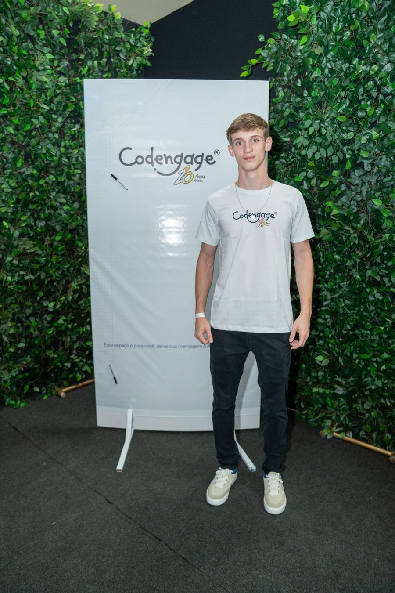

Codengage — Desenvolvedor
Componentes reutilizáveis (gem CodengageViewComponents, Ruby/ViewComponent), padrões de UI, testes e lint.
Estudante de Programação para Web 1 (UTFPR) · Desenvolvedor na Codengage

Olá! Sou o Gabriel Baldo, estudante da UTFPR e desenvolvedor. Este site é a Etapa 1 do Projeto 1 da disciplina de Programação para Web: somente HTML, sem CSS nem JavaScript — o visual simples é de propósito, o foco aqui é estrutura e conteúdo.
Versão atualizada com visual completo: voltar ao portfólio.
Trabalho como dev na Codengage, no ecossistema supercota (Rails + IA). Nos projetos próprios vou de Java/Spring a Next.js — sempre versionado no Git e publicado na web.
Meus interesses: front-end acessível e responsivo, back-end com APIs e webhooks, e IA aplicada a problemas reais.
Componentes reutilizáveis (gem CodengageViewComponents, Ruby/ViewComponent), padrões de UI, testes e lint.
Gestão de licitações com Rails 8, Hotwire + Tailwind, Postgres, filas e deploy com Kamal + Docker.
Java/Spring + Next.js, pagamento com Stripe e WhatsApp multi-provedor. Validado em produção.
Conversor BRL ⇄ USD/EUR/BTC com cotação viva (Banco Central + CoinGecko). Ver em github.com/Gabriel-Baldo/cambio-hoje.
Formulário de demonstração — nesta etapa não envia para servidor.